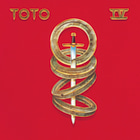
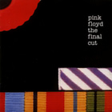
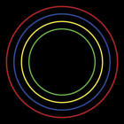
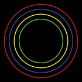
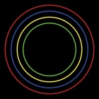
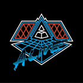
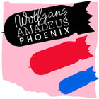
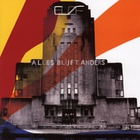
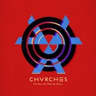

Thumbnails
Musium generates a cached thumbnail per album, extracted from the embedded cover art. The smaller thumbnails speed up the web-based library browser substantially.
Initially, Musium used Imagemagick both for downsizing cover art, and for encoding the thumnails as jpeg. However, better compressors exist, and for some types of album art, in particular graphics with solid red areas, the thumbnails generated by Imagemagick showed pretty bad artefacts. This document compares compressors.
Encoders considered
The following encoders were compared:
- Imagemagick 7.0.9-10 Q16
- Mozjpeg 3.3.1
- Guetzli 1.0.1
These were used to encode 1216 downsized cover art images. They were downsized from their native size to 140 × 140 pixels with Imagemagick through
convert infile
-colorspace LAB
-filter Cosine
-distort Resize 140x140!
-colorspace sRGB
-strip
outfile.png
Size
The cumulative size of all 1216 compressed thumbnails for various encoders:
| Size (bytes) | Encoder | Quality |
|---|---|---|
| 10,771,743 | Guetzli | 95 |
| 11,926,551 | Guetzli | 96 |
| 12,016,780 | Mozjpeg | 92 |
| 12,889,658 | Imagemagick | 95 |
| 13,049,795 | Mozjpeg | 93 |
| 13,605,461 | Guetzli | 97 |
| 14,157,834 | Mozjpeg | 94 |
| 14,254,799 | Imagemagick | 96 |
| 14,988,104 | Mozjpeg | 95 |
| 19,531,105 | Mozjpeg | 97 |
| 20,254,930 | Guetzli | 99 |
The quality is the quality level passed to the encoder.
The goal of this investigation was to find the most appropriate replacement for Imagemagick at quality 95 (which was used initially), but it is not obvious how to make a fair comparison when the sizes differ so greatly.
Because the default of Imagemagick at quality 95 was a bit arbitrary, we can instead compare the 3 options that are closest together in terms of size, for a fairer comparison.
- Guetzli 96, Mozjpeg 92, Imagemagick 95, with a gap of 963,107 bytes.
- Imagemagick 95, Mozjpeg 93, Guetzli 97, with a gap of 715,803 bytes.
- Guetzli 97, Mozjpeg 94, Imagemagick 96, with a gap of 649,338 bytes.
This means we will involve Imagemagick at quality 96 instead of 95, so the artefacts are not as bad, but they are still fairly apparent.
Comparison
Below is a comparison of the thumbnails where artefacts were most apparent in the images encoded by Imagemagick. This is not a general comparison of the encoders; the focus is specifically on images where Imagemagick performed badly. One thing that most of these images have in common, is that they contain solid areas of bright red with sharp edges.
| Guetzli 97 | Mozjpeg 95 | Imagemagick 96 |
|---|---|---|
 |
||
|  |  |
|
|  |  |
|
 |
 |
|
 |
||
|  |  |  |
 |
 |
 |
 |
||
 |
||
|  | ||
 |
 |
|
 |
 |  |
 |
 |
 |
 |
 |
 |
 |
 | |
 |
 |
 |
A few things stand out visually:
- Both Guetzli and Mozjpeg perform much better than Imagemagick.
- Where Imagemagick creates blurry edges, Mozjpeg creates sharp edges, but at the cost of ringing artefacts. Guetzli produces sharp edges without much ringing.
Throughput
This comparison does not include timing information, but while running the various compressors, it was clear that Guetzli is much slower than either Imagemagick or Mozjpeg. For Musium this is not a big problem, because generating thumbnails tends to be IO-bound when the files are one a a spinning disk. As long as Guetzli is faster than the disk, it is fast enough.
Conclusion
We should compress thumbnails with Guetzli to minimize visible artefacts.